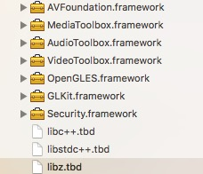
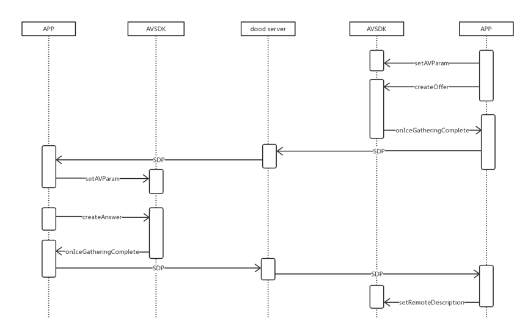
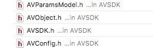
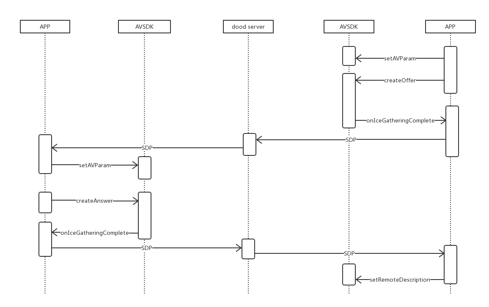

AVSDK概述
LinkdoodAVSipSDK 是北信源软件股份有限公司为移动设备通话的即时通讯开发框架，实时通话分为语音通话和视频通话，将音频通讯进行数据流量化。
AVSDK功能
- 视频聊天（基本会话创建、控制、摄像头切换）
- 语音聊天（基本会话创建、控制、听筒外音切换、静音等功能）
AVSDK-接口介绍及使用说明
注意:AVSDK库使用说明
- 目前该版本的库支持一对一视频和音频通话，主要功能接口：音视频通话接口(文档后续说明建立过程及对应接口)，通话中功能接口:挂断，拒接，静音，摄像头切换，听筒外音切换(蓝牙),停止视频采集（视频通话中转音频,参数获取(码率，帧率等详细参数参照相关头文件AVConfig);
- 音视频的库需要依赖系统类库，在使用前必须导入以下的类库

- iOS10 需要添加访问权限
Privacy - Camera Usage Description //相机权限
Privacy - Microphone Usage Description//麦克风权限
Privacy - Speech Recognition Usage Description//麦克风权限
Privacy - Bluetooth Peripheral Usage Description//蓝牙权限
AVSDK使用流程：
调用时序图：

库相关:
- 项目中引入 AVSDK.framework（导库的时候请仔细检查库是否导入，以及库的路劲是否准确;
- 需要使用音视频的地方导入 #import \
即可;
创建AVObject对象(主接口文件)：
@property (nonatomic, strong)AVObject *avObject;实例化，并设置相关代理
self.avObject = [[AVObject alloc]init]; [self.avObject setDelegate:self]; //<AVObjectDelegate>参数设置(iOS是使用对象来存储需要的参数)：
AVParamsModel *model = [[AVParamsModel alloc]init]; if (self.isVideo) {//音频不用设置 //这里对远端和本地视频View的创建，推荐使用纯代码创建 self.videoView.frame = CGRectMake(0, 0, SCREEN_WIDTH, SCREEN_HEIGHT); self.cameraView.frame = CGRectMake(0, kLocalVideoViewMarginY, SCREEN_WIDTH/4, SCREEN_HEIGHT/6); //(1) 传递远端和本地视频View model.paramLocalView = self.cameraView; model.paramRemoteView = self.videoView; //(2) 视频通话时，该参数必须设置 model.paramOpenVideo = YES; } //(3) 打洞服务器（可以不用设置 默认为公网服务器） //该地址只是示例， model.paramIceServer = @"110.14.155.00"; model.paramIcePort = @"1234"; model.paramIceUser = @"admin"; model.paramIcePwd = @"admin"; //(4) 参数设置 [self.avObject setAVParam:model];主接口调用
主叫端(发起通话请求)调用接口;
[self.avObject createOffer];- 被叫端(接听方)调用接口:
/****************** 1. 这里的接口调用顺序一定不能反； 2. 接听端的最后一个参数一定要是“offer”； 3. sdpString(该值在后面有说明)是需要呼叫方发过来的参数； ********************/ [self.avObject setRemoteSDP:self.sdpString type:@"offer"]; [self.avObject createAnswer];//接听
收到被叫端sdp后调用:
[avsipObject setRemoteSDP:self.sdpString type:@"answer"];接通后会回调该方法：
//参数在后面有说明 - (void)sipObject:(AVSipObject *)sipObj didReceiveCallBackStatus：(MSG_TYPE)status; //异常错误状态回调 - (void)sipObject:(AVSipObject *)sipObj errorStatu:(NSString *)errorType;参数回调(sdp):
// 主叫端调用**createOffer**或被叫端调用**createAnswer**后会回调该方法：
//接口参数说明在后面接口说明里
-(void)objectClient:(AVObject *)obj didReceiveCallBackSDPString:(NSString *)sdpString withSDPType:(NSString *)type{
//发送一条消息(将SDP发送给对方，调用setRemoteSDP设置参数）
if (![sdpString isEqualToString:@" " ] || !sdpString) {
}else{
}
}
}
AVSDK头文件：
- 所有接口文件

- AVObject 库主要文件，音视频主要接口都在改文件中，所有接口介绍在（三）介绍；
AVConfig处理所有枚举和常量值；
AVParamsModel 所有音视频参数通过该模型类传递;
AVSDK 包含所有项目头文件，工程使用类库时，只需要引入该头文件；
主接口文件:
- 初始化参数设置
/**
* 音视频初始化参数设置
*
* @param params 参数
*
*/
- (void)setAVParam:(AVParamsModel*)params;
- 呼叫
/**
* 呼叫时 调用
*/
- (void)createOffer;
- 接听
/**
* 应答时 调用
*/
- (void)createAnswer;
- 前后置摄像
/**
* 前后摄像头切换
*/
- (void)switchCamera;
- 静音设置
/**
* 静音设置（麦克风）
*
* @param isEnableMic yes 开启
*/
-(void)setMicrophone:(BOOL) isEnableMic;
- 外音听筒切换
/**
* 外音听筒切换
*
* @param isEnableSpeaker 默认外音 no:开启听筒(蓝牙)
*/
- (void)setSpeaker:(BOOL) isEnableSpeaker;
- 视频采集开关
/**
* 视频采集开关
*
* @param isEnableCapture
*/
- (void)setCaptureEnable:(BOOL)isEnableCapture;
- SDP参数设置
/**
sdp参数设置
@param sdp sdp参数
@param type 参数类型
*/
-(void)setRemoteSDP:(NSString *)sdp type:(NSString*)type;
- 资源释放
- (void)destroy;
- 音视频数据获取
/**
* 音视频数据获取
* 数据接通后，音视频参数及设备状态回掉
* @param timerHandler 数据回调
*/
- (void)getStatsWithBlock:(void (^)(NSDictionary *stats))response;
注:字典的键获取在AVConfig（不用再次导入）中,解析参照:
- (NSString *)statsStringWithDic:(NSDictionary*)dic {
NSMutableString *result = [NSMutableString string];
NSString *videoSendFormat = @"发送帧率:%@;码率:%@;分辨率:%@X%@\n";
[result appendString:[NSString stringWithFormat:videoSendFormat,dic[kStatsValueNameFrameRateSend],dic[kStatsValueNameFrameBitrateSend],
dic[kStatsValueNameFrameWidthSend], dic[kStatsValueNameFrameHeightSend]]];
// Video receive stats.
NSString *videoReceiveFormat = @"接收帧率:%@;码率:%@;分辨率:%@X%@\n";
[result appendString:[NSString stringWithFormat:videoReceiveFormat,dic[kStatsValueNameFrameRateReceived], dic[kStatsValueNameFrameBitrateReceived], dic[kStatsValueNameFrameWidthReceived], dic[kStatsValueNameFrameHeightReceived]]];
return result;
}
回调接口:
- 回调返回状态
/**
* svsdk 回调返回状态
*
* @param obj sdk接口类
* @param status 状态回调
*/
-(void) objectClient:(AVObject*)obj didReceiveCallBackStatus:(MSG_TYPE)status;
- sdp数据
/**
* svsdk 回调sdp数据
*
* @param obj sdk接口类
* @param sdpString 回调sdp数据
* @param type 是主叫还是被叫(answer和offer)
*/
-(void) objectClient:(AVObject*)obj didReceiveCallBackSDPString:(NSString*)sdpString withSDPType:(NSString*)type;
- 错误信息返回
/**
* 音视频 错误信息返回
*
* @param obj sdk接口类
* @param errorType 错误状态
*/
-(void) objectClient:(AVObject*)obj errorStatu:(NSError*)error;
时序图

AVSDK接口与功能
void SetAVParam(const AVParam param);
功能：设置AVSDK的参数
- paramLocalRender 本地SurfaceView
- paramRemoteRender 远端SurfaceView
- paramLocalLayout
- paramRemoteLayout
- paramActivity
- paramIceServer 打洞服务器ip
- paramIcePort 打洞服务器端口
- paramIceUser 打洞服务器用户名
- paramIcePwd 打洞服务器密码
- paramOpenAudio 是否打开音频
- paramOpenVideo 是否打开视频
int RegisterUserCallBack(UserCallBack ulistener)
功能：设置回调函数
int CreateOffer();
功能：主叫端向被叫端发起音视频通话请求，生成SDP
int CreateAnswer();
功能：被叫端接收到主叫端的SDP，做出响应并生成SDP
int SetRemoteDescription(String sdp);
功能：主叫端接收到被叫端的SDP，并进行设置
void Destroy();
功能：释放webRTC资源，在结束通话时使用
void SwitchCamera(bool enable);
功能：切换摄像头
void SetMicrophone(boolean isEnableMic)
功能：静音
void SetSpeaker(boolean isEnableSpeaker)
功能：听筒外音切换
回调
void onIceGatheringComplete(String sdp);
功能：AVSDK将生成的SDP回调给应用层
void onIceConnected();
功能：连接成功
void onIceDisconnected();
功能：断开连接
void onPeerConnectionError(String description);
功能：错误信息e